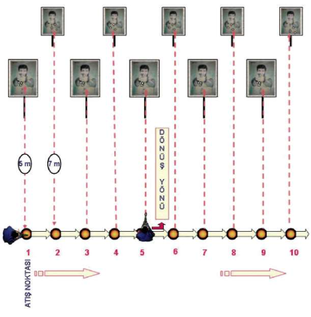
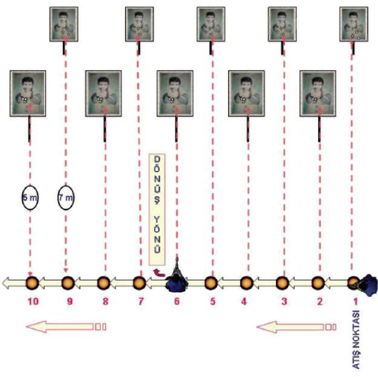

Bu tekniği uygulamanın amacı,
^ Yürürken değişik yönlerden çıkan ani hedeflere yönelme,
^ Hedefe ve hedefin yönüne yoğunlaşma,
^ Ani duraklayıp atış yapabilme gibi durumları refleks hâline getirmektir Şekil-6.a) Yürürken Önden Çıkan Hedeflere Doğru Durarak Atış İstasyonu 68



BÖLÜM
İLERİ SEVİYE ATIŞ TEKNİKLERİ
Şekil-6.b) Yürürken Sağdan Çıkan Hedeflere Doğru Durarak Atış İstasyonu Şekil-6.c) Yürürken Soldan Çıkan Hedeflere Doğru Durarak Atış İstasyonu 69

Şekil-6.d) Yürürken Geriden Çıkan Hedeflere Doğru Durarak Atış İstasyonu 1.6. YARI OTOMATİK TABANCA İLE KOŞARKEN DURUP DEĞİŞİK
YÖNLERDEN ÇIKAN HEDEFLERE DOĞRU ATIŞ TEKNİKLERİ
1.6.1. Koşarken Önden Çıkan Hedeflere Doğru Durarak Atış Tekniği Koşarken ön taraftan çıkan hedeflere karşı önce duruşunuzu step yaparak tamamlayın. Eş zamanlı olarak hızlı atış pozisyonuna geçerek, tabanca elinizde ise direkt hedefe doğrultup atış yapın. Tabanca kılıfında ve fişek yatağı boş ise çekip kurarak, fişek yatağı dolu ise direk hedefe yönelterek atış yapın.
(Bakınız Resim-8.a)